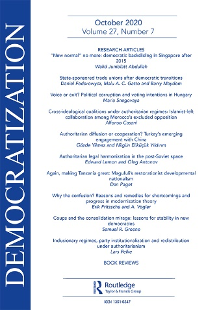
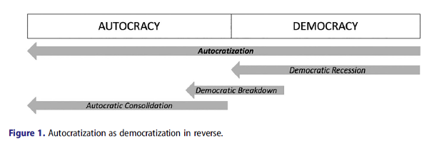
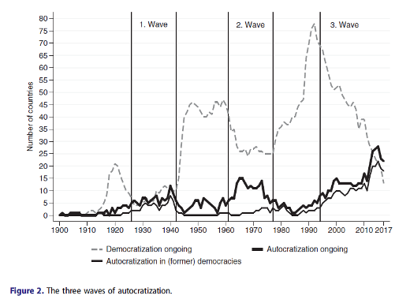
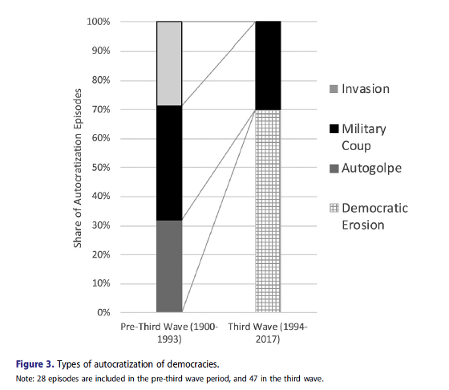
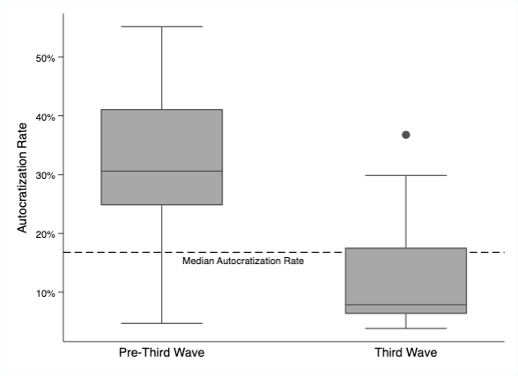
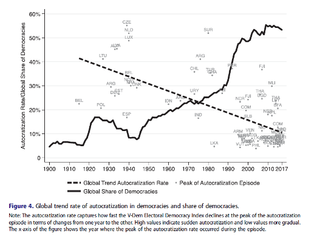
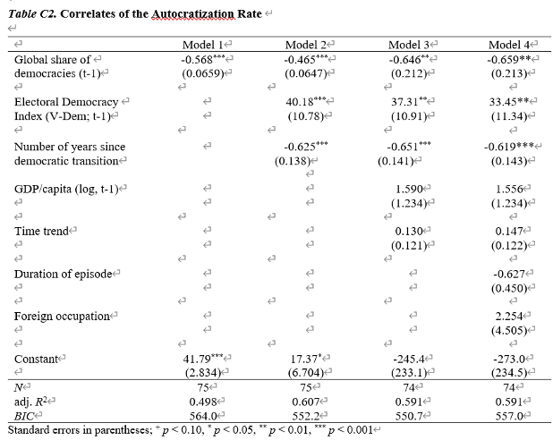

收录于合集

作品简介
【作者】 Anna Lührmann，瑞典哥德堡大学政治学系助理教授，V-Dem研究所副主任。
Staffan I. Lindberg，瑞典哥德堡大学政治学系教授，V-Dem研究所主任。
【编译】 李雯珲（国政学人编译员，南开大学周恩来政府管理学院）
【校对】 杨帆 缪高意
【审核】 宋翔宇
【排版】 高佳美
【美编 】聂涵琳
【来源】 Anna Lührmann & Staffan I. Lindberg (2019) A third wave of autocratization is here: what is new about it?, Democratization , 26:7, 1095-1113, DOI: 10.1080/13510347.2019.1582029
期刊简介

Democratization（《民主化》）杂志致力于研究民主规范、体制在国家和文化边界内和跨国界的演变和传播，以比较的眼光特别关注发展中国家的威权体制与民主化，鼓励就民主化的许多方面进行讨论。2019年该期刊影响因子为1.745。
第三波专制化浪潮来了：
**有什么新亮点？
**
A third wave of autocratization is here: what is new about it?
Anna Lührmann Staffan I. Lindberg
内容提要
在福山和其他人宣称自由民主将永远占据主导地位不到30年之后，第三波专制化浪潮已经显现。民主政体的逐渐衰落是当代专制化的主要特征。然而，我们缺乏适当的概念和实证方法来判断和比较这种难以捉摸的过程。为了解决这一问题，本文基于V- Dem（Varieties of Democracy Project）的数据，首次对1900年至今所有专制化浪潮进行实证研究。我们证明，第三波专制化的确正在展开。它主要影响民主国家，民主政权在合法的表象下逐渐受挫。虽然这令人担忧，但本文提出，我们不必为此恐慌：目前民主的衰落相对温和，民主国家的比重仍接近其历史高点。正如1992年宣布“历史的终结”为时过早，现在宣布“民主的终结”也为时尚早。
文章导读
01
引言
民主政体的衰落，专制化浪潮来袭，这已成为全球性挑战。巴西、布隆迪、匈牙利、俄罗斯、塞尔维亚和土耳其等不同国家的民主受挫引发了新一代关于专制化的研究。
在这一领域还有两个关键问题尚未解决。首先，学者们一致认为，不同于以往军事政变、外国入侵等显而易见的民主崩溃，当代民主往往会在合法性的伪装下逐渐被侵蚀。但我们缺乏恰当的概念和实证方法来系统地分析这种模糊的过程。其次，学界对当前这波专制化浪潮的严重程度存在分歧：和过去几十年相比，当今的世界是更加民主还是更加专制？
本文从三方面解决上述两个问题。第一，本文提出“民主衰退”（democratic recession）概念替代过去常常使用的“民主倒退”（democratic backslide），以反映当前民主所面对的复杂境遇。第二，本文基于V- Dem数据，对民主化/专制化潮流进行了系统性的实证主义分析。第三，本文以历史视角对民主化/专制化潮流进行了研究，认识到当前世界受到专制化的冲击，但是总体而言我们仍处于民主的时代。
02
研究现状
目前，一些民主政权遭遇的困境已经得到了学者的关注。一系列关于专制化的新研究似乎已经产生了一个重要的共识：专制化的过程似乎已经改变。有学者指出，“最明显的倒退形式”正在衰落，如军事政变和选举日的投票舞弊。相反，更隐秘的专制化方式正在上升，如反对派的骚扰、分权制衡的失败。但是既有研究大都采取案例分析的方法，没有提供一个系统的方法来衡量这种新的专制化。且现有的专制- 民主二分法，无法窥探民主国家或专制国家的细微变化。多党选举制度使得传统的独裁政权难以存在，但是选举威权主义日益盛行，而这是传统研究所忽略的内容。
本文的创新点主要在两个方面。一是基于专制化的新特征，提出“民主衰退”概念，并进行实证分析。二是本文从历史的角度对当代专制化潮流进行全面的实证分析。
03
什么是专制化，什么不是
关于民主化/专制化是质变还是量变的问题，学界一直有所争论。学者通常用三个术语来描述非民主：民主倒退（democratic backsliding）、民主崩溃（breakdown of democracy）和专制化（autocratization）。但是，本文作者认为，民主与专制之间存在一个渐进的过程，应该存在一个民主- 专制的谱系来更加准确地定位不同国家所处的位置。
作者认为，既有的三个概念不能清晰的反映民主- 专制谱系。首先是民主崩溃，这一概念只适用于少数独裁事件（如军事政变），在当今世界，这种事件越来越少。其次是民主倒退，指“在任何政权内，与民主治理相关的品质的恶化”。这一概念适用于描述民主政权的变化，专制政权无法发生民主倒退。“倒退”意味着退回到过去状态，但现实中也有可能走向新的形式的独裁。且“倒退”呈现出一种被动的、非自愿的状态，无法反映统治者的主动行动。最后是专制化，这一概念与民主相悖，无法区分民主突然崩溃和渐进式的民主衰退或者专制强化。
基于上述概念的不足，作者提出了新的概念体系。作者使用“民主衰退”（democratic recession）一词来表示在民主国家内发生的专制过程，用“民主崩溃”（democratic breakdown）来描述民主转变为专制国家的过程，以及“独裁巩固”（autocratic consolidation）指代民主特征在已经独裁的情况下逐渐下降。

04
操作化和数据
本文采用V- Dem数据中的选举民主指数（EDI）来衡量一个政权的民主程度。EDI抓住了达尔著名的“多头政体（polyarchy）”选举民主概念中的核心制度要求：普选、在自由公正的选举中选举出的官员、信息的多元渠道、言论自由以及结社自由。V-Dem的EDI指数有四个关键优势。首先，V-Dem数据覆盖的时间、空间范围广，数据可以追溯到1900年。其次，EDI反映了一个政权实际上有多民主，而不仅仅是其法律制度安排。此外，它在政体属性方面有强大的理论基础，达尔已将这些属性确定为选举民主的核心要求。最后，作为实际民主水平的连续指标，它对渐进而缓慢的专制化进程十分敏感。
EDI指数范围是0到1，数值越高表示越民主。作者认为，如果在连续时间内，国家的EDI指数下降0.1以上，就表示出现了专制化。
在专制化时期界定方面，作者将EDI指数年度下降0.01及以上视为潜在的专制化的开始，并允许EDI连续四年停滞，因为这反映出专制化的缓慢变化。当EDI比前一年上升0.02及以上时，就意味着专制化的结束，出现了潜在的民主化现象。
05
对专制化的诊断：1900-2017
作者首先对1900-2017年间109个国家的217起专制化事件进行了全面分析。这其中既包括在2017年被认定为专制的国家，也有被认定为民主的国家。
1. 第三波专制化浪潮是确实存在的，并且对民主构成威胁
亨廷顿明确地指出了三波民主化浪潮和两波回潮，本文进一步指出，第三波专制化浪潮正在展开。
作者将专制化浪潮定义为民主化国家数量的减少。图2中，灰色虚线表示每年受民主化影响的国家数目。黑色粗线表示每年经历专制化过程的国家数量。黑色的细线表示后者中有多少是发生在民主国家的。图2描绘了三波专制化浪潮：第一波专制化浪潮大约发生在1926年至1942年，第二波专制化浪潮发生在1961年至1977年。后冷战时期的民主化浪潮在90年代初已经放缓，从俄罗斯、亚美尼亚和白俄罗斯开始，逐渐逆转的进程开始蔓延。第三波专制化浪潮已于1994年真正开始。到2017年，出现专制化的国家数量超过了民主化的国家数量。这种情况自1940年以来从未发生过。
从图2还可以看出，第一波民主回潮同时影响了民主和专制政体，第二波回潮几乎只是使选举专制政体恶化，而在第三波专制化浪潮中，民主政体受到广泛影响。第三波专制化浪潮的一个重要特征是它主要影响民主政权，而不是选举专制政权，这部分是因为当前全球民主水平接近历史最高峰，民主国家越多，自然也就可能会有越多的民主国家受到专制化的影响。但至少就目前而言，这一趋势是比较温和的。

2. 在民主国家：第三波专制化浪潮以合法的面目出现
从图3可以看出，在前两次专制化进程中，主要的手段是军事政变（39%）、外国入侵（29%）和自我政变（autogolpes，32%，指统治者以合法方式获取权力，此后废除关键的民主制度，实行专制）。这些方式都是相对比较明显的，特别是军事政变和外国入侵是非法的。
但第三波专制化浪潮中，民主侵蚀（democratic erosion）成为主要途径。在这一过程中，统治者以合法方式取得权力，然后渐进地、实质性地破坏民主规范，但仍保留关键的民主机构。第三波专制化浪潮中70%的专制化都是以这种形式进行的，其中以匈牙利和波兰为典型代表。

3. 在民主国家：第三波专制化浪潮是渐进式的
作者开发了一套新指标来衡量专制化的速度：最大年专制化率，即在一段专制化时期中，该政权的选举民主指数（EDI）第二年比前一年下降幅度的最大值。最大年专制化率反映了专制化时期民主特征的衰落，其数值越大，表示衰落的越快。例如，1930年至1935年的德国独裁时期，始于魏玛共和国三年的逐渐衰落。然而，这一事件的主要特点是希特勒在1933年上台，随后民主制度突然崩溃。这反映在高达26%的最大年专制化率上。相反，土耳其2008年至2017年和俄罗斯1993年至2017年这两段时期只涉及渐进变化——从相对较低的年专制化率（土耳其7%，俄罗斯5%）就可以看出。其他速度测量方法，如平均下降、年下降率和衰减率（decay rate），并不能完全捕捉这两种模式之间的差异。

Figure D2. Box Plot Autocratization Rate across the Waves of Autocratization (Democratic Recessions only)
图D.2展示了一个箱线图，以最大年专制化率比较了三个专制化浪潮期间的专制化速度。在第一和第二波中，最大年专制化率的中位数为31%，在第三波中下降到8%。在量表的底部，最大年专制化率为3.8%，相应案例是菲律宾从2001年到2005年非常渐进的专制化过程，其次是瓦努阿图1988年到1996年的专制化进程，最大年专制化率为4.3%。最突然的崩溃发生在德国入侵捷克共和国（55%）和荷兰（52%）之后。

图4显示，随着时间的推移，民主国家的专制率显著下降，全球民主国家的比例显著上升。民主国家的全球份额与最大专制化率呈负相关，且在统计上显著相关（见表C2）。

06
总结：第三波专制化浪潮
本文首次从历史的角度对当代专制化进行了系统的实证分析。首先，这篇文章提供了一种新的方法来识别突然的和渐进的专制化事件，对1900-2017年间的民主- 独裁谱系中的专制化变化进行了全面的实证分析。其次，本文发现第三波专制化浪潮具有明显的区别于此前专制化浪潮的特征，如第三波专制化浪潮多通过合法和渐进的方式来破坏民主。最后，作者设计了新的度量体系——最大年专制化率——来衡量政权在一年间的专制化速率。结果显示第三波专制化浪潮进程更加缓慢和温和，并且更善于伪装。也因此，当今世界仍然是更加偏向民主的。这给人们带来了希望，但也应该警惕专制化的抬头。总之，1992年宣布“历史的终结”为时过早，现在宣布“民主的终结”也为时过早。
文章观点不代表本平台观点，本平台评译分享的文章均出于专业学习之用, 不以任何盈利为目的，内容主要呈现对原文的介绍，原文内容请通过各高校购买的数据库自行下载。
**
**
**
**
**
**
添加 “国小政”微信
获取最新资讯


国政学人
支持学术公益与知识传播
微信扫一扫赞赏作者 __赞赏
已喜欢，对作者说句悄悄话
取消 __
发送给作者
发送
最多40字，当前共字
上一页 1/3 下一页
长按二维码向我转账
支持学术公益与知识传播
受苹果公司新规定影响，微信 iOS 版的赞赏功能被关闭，可通过二维码转账支持公众号。